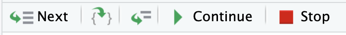

load_all()
biomass_index(cpue = "ten", area_swept = 5)Debugging Techniques
Reading Error Messages and traceback()
When something goes wrong, R prints an error message. The first step is always to read it carefully.
The error tells us what went wrong, but not where in the call chain it happened. traceback() shows the sequence of function calls that led to the error:
traceback()Read the traceback bottom to top. The bottom is where your code started, the top is where the error occurred.
Deeper call chains
When functions call other functions, the traceback gets more interesting:
biomass_index(area_swept = 5, catch = "bad", effort = 10)traceback()3: validate_numeric_inputs(catch = catch, effort = effort) at cpue.R#5
2: cpue(catch, effort, ...) at biomass.R#6
1: biomass_index(area_swept = 5, catch = "bad", effort = 10)You called biomass_index() (frame 1), which called cpue() (frame 2), which called validate_numeric_inputs() (frame 3), where the error was raised. The traceback reads bottom-to-top: your entry point is at the bottom, the error location is at the top.
Print Debugging
The quick-and-dirty approach everyone uses from time to time: add print statements to see what’s happening at any given point into yur code.
Say biomass_index() is returning a surprising result and you want to see what cpue looks like before the final calculation:
biomass_index <- function(
cpue = NULL,
area_swept,
catch = NULL,
effort = NULL,
...
) {
rlang::check_dots_used()
if (is.null(cpue) && (!is.null(catch) && !is.null(effort))) {
cpue <- cpue(catch, effort, ...)
}
if (is.null(cpue)) {
stop("Must provide either 'cpue' or both 'catch' and 'effort'.")
}
validate_numeric_inputs(cpue = cpue, area_swept = area_swept)
print(paste("cpue value:", cpue)) # <-- temporary debugging output
cpue * area_swept
}load_all()
biomass_index(area_swept = 5, catch = 100, effort = 10)Now you can see the intermediate value. Once you’ve found the problem, delete the print() statement.
This is sometimes all you need: quick checks of variable values, confirming which branch of an if statement runs. When you need more (complex logic where you’d need many print statements, or when you need to inspect the full environment) reach for browser().
browser(): Interactive Debugging
browser() pauses execution and drops you into an interactive debugger where you can inspect and modify variables.
Basic usage
Add browser() to the function you want to inspect:
cpue <- function(
catch,
effort,
gear_factor = 1,
method = c("ratio", "log"),
verbose = getOption("fishr.verbose", FALSE)
) {
method <- match.arg(method)
validate_numeric_inputs(catch = catch, effort = effort)
browser() # <-- execution pauses here
if (verbose) {
message("Processing ", length(catch), " records using ", method, " method")
}
raw_cpue <- switch(
method,
ratio = catch / effort,
log = log(catch / effort)
)
raw_cpue * gear_factor
}load_all()
cpue(c(100, 200, 300), c(10, 20, 30))Browser commands
Once inside the browser, you have a mini command language:
| Command | Action |
|---|---|
n |
Next: execute the current line and step to the next |
s |
Step into: if the current line calls a function, enter that function |
c |
Continue: resume execution until the next browser() or the end |
Q |
Quit: stop execution immediately |
where |
Show the call stack (like traceback() but while paused) |
You can also run any R expression: ls() to list all variables in the current environment, str(raw_cpue) to inspect structure.
You can also use the equivalent button that appear in RStudio when you enter debugging mode:

Conditional browser
You don’t always want to pause. Sometimes you only want to stop when something is wrong:
cpue <- function(catch, effort, gear_factor = 1, ...) {
if (any(effort == 0)) browser() # only pause when there's a problem
# ... rest of function
}This lets you run the function many times and only stop when the suspicious condition is met.
WarningRemove browser() before committing
browser() calls should never be committed to your package. R CMD check (via check()) will warn you about leftover browser() calls, but it’s good to build the habit of removing them immediately after debugging.
RStudio Breakpoints and debug()/debugonce()
Visual breakpoints in RStudio
Instead of editing code to add browser(), you can click in the editor gutter (the grey margin to the left of line numbers) to set a breakpoint (red dot). This has the same effect as browser() but doesn’t modify your source file.
After setting a breakpoint, run load_all() to activate it.
debug() and debugonce()
For functions you can’t easily edit (from other packages, or when you don’t want to modify source):
# Enter browser on EVERY call to cpue
debug(cpue)
cpue(100, 10) # pauses
cpue(200, 20) # pauses again
# Turn it off
undebug(cpue)# Enter browser on the NEXT call only
debugonce(cpue)
cpue(100, 10) # pauses
cpue(200, 20) # runs normally, auto-clearedWhen to use each:
- Breakpoints: your own package code during development
debugonce(): quick one-off inspection of any functiondebug(): when you need to step through a function repeatedly (remember toundebug())
options(error = recover)
For post-mortem debugging. Inspect the state after an error has occurred:
options(error = recover)
biomass_index(cpue = "ten", area_swept = 5)R will print the call stack as a numbered list and prompt you to pick a frame:
Enter a frame number, or 0 to exit
1: biomass_index(cpue = "ten", area_swept = 5)
2: validate_numeric_inputs(cpue = cpue, area_swept = area_swept)
Selection:Type a frame number to browse into it. Once inside, you can run ls(), inspect variables, etc. Type 0 to exit.
This is especially useful when you don’t know where the error is coming from and want to explore the full call stack interactively.
# Reset to default behaviour when done
options(error = NULL)Debugging Failing Tests
browser() inside test_that()
You can add browser() inside a test to inspect what’s happening:
test_that("cpue calculates correctly", {
browser()
result <- cpue(catch = 100, effort = 10)
expect_equal(result, 10)
})Run this interactively with Ctrl+Enter (not with test()). The test runner captures output differently, so interactive execution gives you the full browser experience.
Narrow down with test_active_file()
When a test fails, don’t run the full suite repeatedly. Focus on the failing file:
devtools::test_active_file()“Passes alone, fails with test()”
A classic problem: a test passes when you run it by itself but fails when running the full suite with test().
This is almost always leftover state: a previous test changed something (an option, a global variable, a file) and didn’t clean up. This is exactly why we use withr for clean tests (from testing Part 2).
Debugging strategy:
- Find which test before yours is causing the problem (binary search: run half the suite)
- Look for side effects:
options(),Sys.setenv(), file creation,set.seed() - Fix with
withr::local_*in the offending test
Debugging snapshot mismatches
When a snapshot test fails, don’t guess what changed:
snapshot_review()This opens a side-by-side diff showing the old snapshot and the new output. You can then decide whether the change is intentional (accept) or a bug (fix).
rlang::last_trace()
When working with tidyverse or rlang-based packages, rlang::last_trace() gives a cleaner backtrace than traceback().
Comparison
After an error from rlang/tidyverse code:
# Standard R traceback: flat list, can be noisy
traceback()
# rlang: tree-structured, hides internal frames
rlang::last_trace()rlang::last_trace() organizes the call stack as a tree and collapses internal package machinery, making it easier to see the path through your code.
Inspecting the error object
rlang::last_error()This returns the error object itself, which you can inspect for the message, the call, and (in rlang errors) a backtrace attached to the error.
This is a “nice to know”, not essential for everyday debugging, but helpful when you’re working with tidyverse internals or rlang-style errors.
Debugging Strategy Summary
A practical order of operations:
- Read the error message: often sufficient on its own
traceback(): find where in the call chain the error occurred- Print debugging: quick variable inspection for simple problems
browser(): interactive inspection for complex logicdebugonce()/debug(): step through functions from other packagesoptions(error = recover): post-mortem exploration of the full call stack
Your Turn
There’s a bug in this standardize_effort() function. It’s supposed to convert effort from hours to days (dividing by 24), then calculate CPUE. Use the debugging tools you just learned to find and fix it.
Add this to R/utils.R:
standardize_effort <- function(catch, effort_hours) {
validate_numeric_inputs(catch = catch, effort_hours = effort_hours)
effort_days <- effort_hours * 24
cpue(catch = catch, effort = effort_days)
}load_all()
# Should give CPUE per day (higher than per hour)
# Effort is 48 hours = 2 days, so CPUE should be 100/2 = 50
standardize_effort(catch = 100, effort_hours = 48)The result should be 50 but it returns something much smaller. Find the bug.
TipSolution
The bug is on the conversion line. It multiplies by 24 instead of dividing:
# Bug
effort_days <- effort_hours * 24
# Fix
effort_days <- effort_hours / 24You could find this by:
- Adding
browser()before thecpue()call and checking the value ofeffort_days - Adding
message("effort_days: ", effort_days)to see the intermediate value - Stepping through with
debugonce(standardize_effort)and inspecting each line